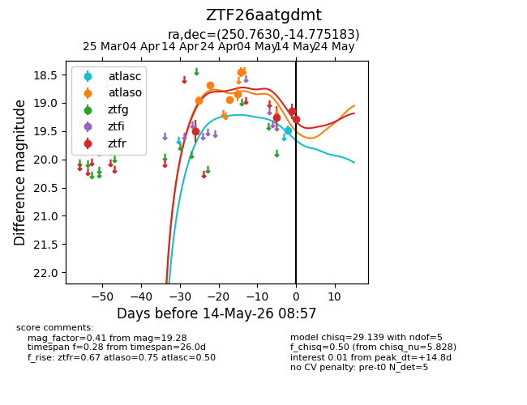
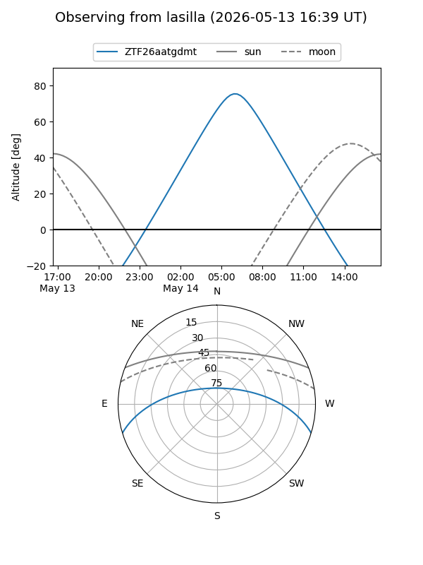
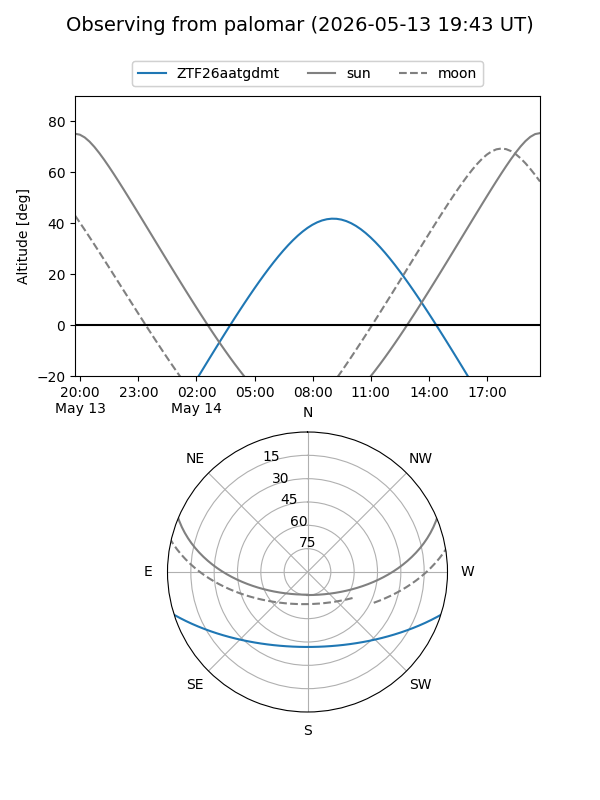
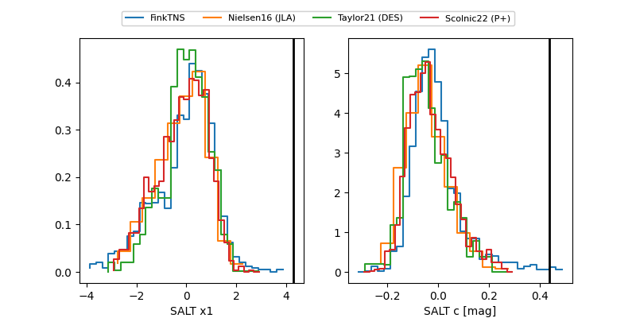

ZTF26aatgdmt
Target ZTF26aatgdmt at 2026-05-14 08:59
Aliases and brokers:
FINK: link
Lasair: link
ALeRCE: link
alt names
ZTF26aatgdmt (ztf,fink_ztf)
Coordinates:
equatorial (ra, dec) = 250.7630,-14.77518
equatorial (HMS+DMS) = 16:43:03.13,-14:46:30.66
galactic (l, b) = (3.5488,+19.93579)
Flags:
Photometry:
last atlasc=19.48, atlaso=18.45, ztfr=19.28
1 atlasc, 5 atlaso, 4 ztfr detections
Lightcurve

Visibility


Additional plots
